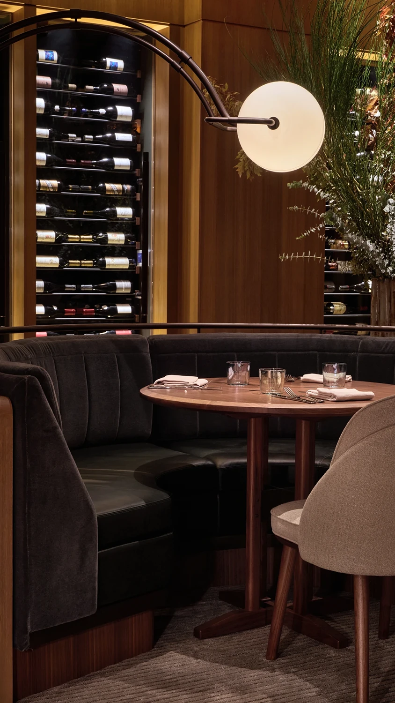
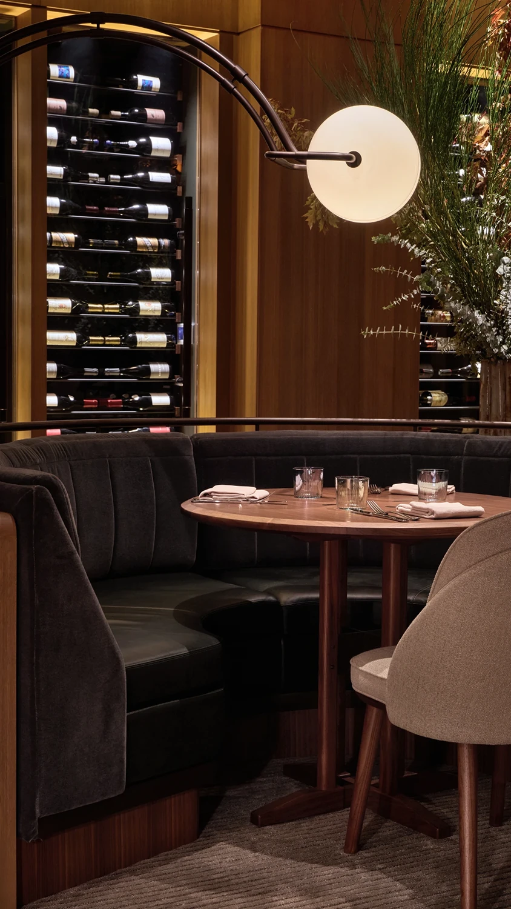

Accompanying the millwork, Prelude’s rich velvet upholstery and soft lighting work in harmony to create an elevated aesthetic that’s distinct from sister restaurant The Third Floor and the rest of The Jay. To mark this visual shift, a dramatically veined marble host stand with a scalloped front welcomes diners. This commanding sculptural piece sets the tone for an experience where detail is prioritized.
Custom panels of chevron-patterned stained-glass with oil rubbed bronze and solid walnut frames form backdrops for comfy semi-circular banquettes. Upholstered in a blue-gray fabric against walnut veneer backs to match the dining chairs, these plush seats surround custom walnut tables with chamfered edge details and highlighted joints.
A soft glow is emitted from table lamps comprising bell-shaped glass diffusers and carved tree bark-like bases. Meanwhile, pairs of illuminated white disks are suspended from arcing metal armatures over tables, and amber-hued glass elements designed to resemble seed pods form chandeliers overhead. For private gatherings, there’s also a separate dining room cloaked in warm terracotta tones, creating a cozy, intimate setting. Portman would have undoubtedly approved.
The interiors take cues from the foggy landscape of the city’s Presidio park, drawing colors and textures from the area to create a distinctive moody atmosphere. Its eucalyptus groves are also referenced literally through the prominent use of the reddish-pink wood variety.
 
